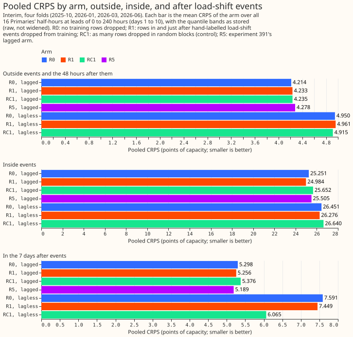
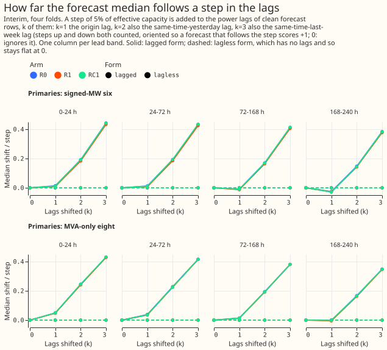
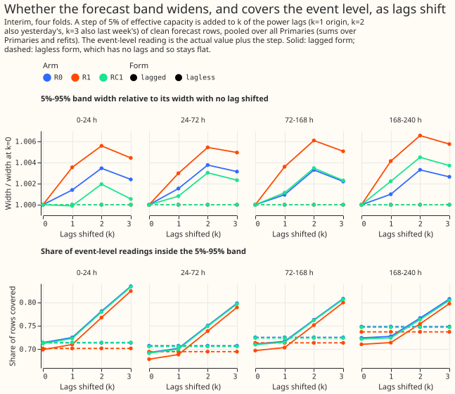
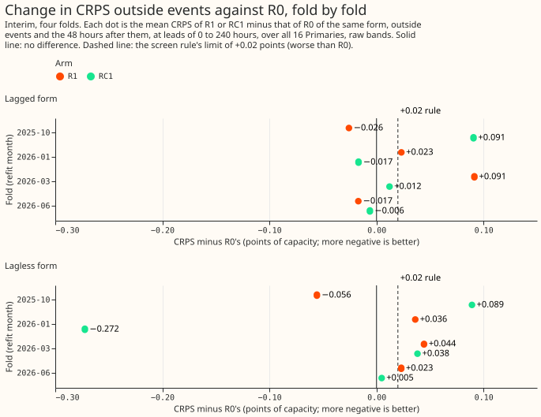

An NRA forecast from XGBoost trained with load-shift events removed from its targets
Removing the labelled load-shift events from the training targets of the monthly XGBoost demand model does not stop its median forecast from following a load shift in its lagged power inputs. A load shift is a period when National Grid Electricity Distribution (NGED) moves a substation's load onto its neighbours. A forecast of what the substation would draw without a load shift is a normal-running-arrangement (NRA) forecast. The model is refitted monthly on each substation's half-hourly demand. We left the half-hours of 66 hand-labelled load shifts, and the 48 hours after each, out of its training targets. We compared that XGBoost model with two others: the same model trained on all half-hours, and one trained with the same number of half-hours left out in random blocks.
A synthetic load shift in the lagged power inputs moves the forecast median by about 40% of its size, with or without the mask. We added a constant step of 5% of the substation's capacity to the lagged power inputs (the reading at the forecast origin, one day earlier, and one week earlier) of half-hours that contain no real load shift. With all three inputs shifted, the median moved by about 40% of the step in every arm that has those inputs. Only the XGBoost model trained without the lagged power inputs did not move.




Result
- The scores are interim, from a screen of four monthly folds. A fold is one refit and the month
it scores: 2025-10, 2026-01, 2026-03, and 2026-06. Each scores 16 Primaries, leads to 336 hours,
and headline days 1 to 10. Four folds give wide intervals, so no interval or 99% claim is made.
Settings:
colsample1.0, one seed, and experiment 87's whole-history training window andn1hrecipe. Widening means scaling the quantile spread about the median; scores are unwidened unless stated. - Arms.
- R0: unmasked. Its lagged form is experiment 381's stored monthly control, reproduced to within 0.0011 of capacity at D2 and D8 (two Primaries). Experiment 402's boosters of it feed the sweep.
- R1: the labelled events and the 48 hours after them are dropped from the training targets.
- RC1: as many half-hours dropped at random, in blocks of the same lengths.
- R5: experiment 391's N1 (surprise columns), not refitted, lagged form only.
- Every arm except R5 has a lagged and a lagless form.
- R2 and RC2 were dropped. They need the detector masks of experiment 391, which are on hold, and R1 already gave a null result.
- Pooled CRPS over the four folds, in percentage points of effective capacity. Outside events and the 48 hours after (879,769 half-hours): lagged R0 4.214, R1 4.233, RC1 4.235, R5 4.278; lagless R0 4.950, R1 4.961, RC1 4.915. Inside events (13,494): lagged R0 25.25, R1 24.98, RC1 25.65, R5 25.50; lagless 26.45, 26.28, 26.64. In the 7 days after (46,176): lagged 5.298, 5.256, 5.376, 5.189 (R5); lagless 7.591, 7.449, 6.065. All rows (906,597): lagged 4.548, 4.563, 4.576, 4.614; lagless 5.310, 5.316, 5.259.
- The screen rule depends on the widening, and its second half cannot be decided. Rule (a) requires CRPS outside events and the 48 hours after them to be no worse than +0.02 against the control in at least 3 of 4 folds. R1 lagged passes 2 of 4 folds and R1 lagless 1 of 4 without widening, and 3 of 4 and 2 of 4 with 1.15 widening. Rule (b) requires the lagless form to follow less labelled depth than R0 lagless in at least 3 of 4 folds. It cannot be decided, because the matched events fall in 3 of 4 folds and every arm follows about 0 of the depth. R1 is indistinguishable from RC1 on every pooled score, so the full year was not run.
- All arms under-cover inside events. The 5% to 95% band covers 0.31 to 0.32 of readings for the lagged arms (nominal 0.90) and 0.23 for the lagless arms.
- The avoidable-curtailment cost differs by under 2% between arms. The cost is that of curtailing generation that a correct forecast would have avoided, using experiment 383's definition, on the six Primaries with signed-MW metering (limit 0.9), and one Primary (D16) dominates it. During events: lagged R0 GBP 8.71 million, R1 GBP 8.76 million, RC1 GBP 8.77 million, R5 GBP 8.88 million; lagless R0 GBP 9.02 million, R1 GBP 9.01 million, RC1 GBP 9.07 million. In the 7 days after: lagged GBP 257 thousand, 256 thousand, 261 thousand, and 260 thousand (R5); lagless GBP 232 thousand, 234 thousand, and 231 thousand.
- The median moves by about 40% of the step when all three lags are shifted, and the band does not widen. The lag-encroachment sweep (step of 5% of capacity added to the lag columns of clean half-hours; level k adds it to the origin lag, then also the day-earlier lag, then also the week-earlier lag; both signs; leads 0 to 240 hours). The median moves, as a share of the step: k = 1, about 0 to 2%; k = 2, 15% to 20%; k = 3, 38% to 41%, for lagged R0, R1, and RC1 in both metering groups, and within one point of one another. Lagless forms move by exactly 0 at every k, which tests the code. The 5% to 95% band width stays within 1% of its width at k = 0. Coverage of the event-level reading rises from 0.68 to 0.70 at k = 0 to 0.78 to 0.82 at k = 3, while coverage of the clean reading falls from 0.86 to 0.88 to 0.81 to 0.85. Experiment 391's N1 (R5) was not swept, because its surprise columns need recomputing from the shifted lags.
- The injected-transfer check cannot show recovery either way. It uses 4 Primaries, the 2026-01 fold, 15 to 18 synthetic events of 0.71, 1.1, or 2.3 MW per Primary added to the training targets and lags. The mean absolute difference of the median from the clean-trained forecast is 0.79 points of capacity for the unmasked lagged model and 0.87 for the masked one, and 0.42 and 0.59 for the lagless forms. Depth recovered, the share of the injected depth that the forecast no longer follows, is -0.11 (lagged) and -0.40 (lagless). The lagless difference of 0.42 is a fit-noise floor.
- Check 2 cannot tell the arms apart. The share of labelled depth followed, over 9 matched events in 3 folds, is 0.00 plus or minus 0.05 for every arm, including the unmasked one, because at leads beyond a day the lags sit far from the event half-hours. One merged event (D5, 2025-12-05 to 2026-01-14) is excluded.
- Dropping the flagged half-hours changes no result. Scoring on experiment 87's
observed.parquetwith flagged half-hours dropped from every arm removes 173 half-hours (170 at D18 in the 2025-10 fold, 3 at D8 in the 2026-03 fold); none of the per-fold results changes. - Six real events are plotted.
figure_events_1.svgtofigure_events_6.svgdraw six real labelled events across both metering groups (two are report-only Primaries), marking the start and end of each and showing the actuals, the median, and the 5% to 95% band of the unmasked lagged, unmasked lagless, and masked lagged forecasts.figure_examples.svgis a fan chart of one event.
Checks
- Median minus mean forecast per site: not computed. The stored forecasts hold quantiles only.
- Error of the median beside the quantile score: printed by the scorer, not tabulated.
- Audit trigger 5 (a control arm that should change nothing changes a score) fires, and one failed fit explains it. The random-block control moves the 7-day-after slice of the lagless form by 1.5 CRPS points (6.065 against 7.591 for the unmasked model). A second reviewer found that the whole gap comes from D18 in the 2026-01 fold (2,149 half-hours): there the unmasked and R1 lagless medians sit near 0.27 of capacity against an actual of 0.81, and only RC1 lagless is normal. Without D18 the lagless ordering outside events flips to 4.913 (R0), 4.920 (R1), and 4.947 (RC1). So the lagless differences between arms are not a random-block effect, and no conclusion rests on them.
- A second reviewer re-derived the pooled scores, the sweep shares, and the row alignment from the stored forecasts and found them correct. It did not re-derive Check 2, the injected transfers, the curtailment costs, or R5. It found no training row at or after a refit time.
- The code review ran after the first fits had started. Its fixes touched only the random-block control and events closer than 48 hours apart, and RC1 was fitted after them; R1 and the lagless R0 were fitted before them.
- The k = 3 share varies by fold. It ranges from 33% to 50% between folds, and 38% to 41% is the pooled range by metering group.
Caveats
- The headline scoring actuals include half-hours that the cleaning step flagged. The feature
cache comes from experiment 103's
rows.parquetwithout thedrop_reasonfilter; it supplies the load-shift event masks and the headline scoring actuals. The fits read experiment 87's own files, where flagged half-hours are nulls. - One R0 lagless fit ran on a CPU, and the rest ran on a GPU. The CPU fit (D2, 2025-10) was a speed benchmark, and its forecast matches the GPU fits' noise level.
- Four folds and one seed limit the evidence. The screen holds only four test months. Of the 66 labelled events, 27 fall in the scored months, and 9 of those have a labelled depth.
- The forecasts are monthly-refit forecasts, so absolute and tail numbers are monthly-schedule numbers, not weekly-refit numbers.
What the next experiment should answer
Whether an NRA forecast needs a model that is told which lags to distrust, such as one trained on synthetic events injected into its lags and targets together (the sweep shows the lags carry about 40% of a step into the median), or whether dropping the lags on suspect rows and widening the band is enough. The injected-transfer check here was too noisy to answer it; a second seed of the control would give its noise floor.
Plan (written before any result)
What experiment 383 already settles
- 383's mask rule differs from R1's. Its
laglessarm drops training rows whose valid time lies in the padded hand-filtered mask of the feature cache (24 hours of padding on each side of an event, taken fromload_or_build_feature_cache). R1 here drops rows inside an event and the 48 hours after it ends, with no padding before the onset. Its refits are weekly; this experiment refits monthly. Its forecasts are therefore not comparable with R0 arm for arm. - Consequence for R1. The rules differ, so R1 is refitted monthly under the brief's rule (event
plus 48 hours after), as R0's twin; the manager agreed on 2026-10-29. 383's stored
laglessarm is not reused because its padding, its weekly cadence, and its single lagless form make it incomparable with R0 arm for arm. - Which NRA checks 383 reports. Check 4 (tails and avoidable-curtailment cost) on contaminated-lag rows, during events, in the 7 days after, and on all rows, and a partial check 1 (main score outside events, days 1 to 10, no lead bands). It does not report check 2 (share of labelled depth followed), check 3 (injected transfers), or the lag-encroachment sweep (its boosters were not saved). All three are new here, as are R2, R3, R4, and the random-block control.
- Evidence read so far. 383's lagless arm lowered CRPS on contaminated rows at the signed-MW six (rests on two events) and raised it at the MVA-only eight; nulling lags (c1) did nothing.
Arms
Every arm is experiment 87's n1h XGBoost member, refitted monthly (maintainer rule,
2026-10-29), colsample_bytree and colsample_bynode fixed at 1.0, one seed, the same training
rows and parameters as R0. Each arm is fitted in a lagged form (three origin lags) and a
lagless form (no power lags). Weekly refits are not used, so every absolute and tail number is
labelled monthly; any winner is re-checked weekly before a release claim.
- R0: no rows dropped; the control.
- R1: rows whose valid time lies inside a hand-labelled transfer, or within 48 hours after it
ends, are dropped, using only events that ended before the fold's
train_end. A ceiling, never a candidate. - R2: the same rule applied to half-hours the "deep and long" detector marks (not run).
- RC1, RC2: as many rows as R1 and R2 drop, in random blocks of the same lengths, as a control for the smaller training set (RC2 not run).
- R5: no mask; experiment 391's arm N1 with surprise columns, stored and not refitted.
-
R3, R4: the train-detect-retrain loop and R2 with neighbour surprise columns (not run).
-
Detector. Taken from experiment 391's
e00391_detector.py(plan PR 41, not yet merged); if 391 has not merged when R2 is due, the file is copied into this folder with a note. The mask for a fold uses only half-hours before itstrain_end, and the detector's tuning months are fixed before any score is read. - R5 shares 391's N1 forecasts and surprise tables; the plan does not refit it. The published
tables are in
data/ml-experiments/00391-xgboost-lag-surprise-second-stage/surprise_tables/(half_hourly/<site>.parquet: quantiles,u,r_mw, and therefitthat predicted each row;origins/<site>.parquet:z,z_noise,r_sigmaper 6-hourly origin). Each row comes from a monthly lagless fit that trained on no row at or after its refit. They cover all 16 Primaries from 2024-10-01 (D15 and D18 from 2025-03) to 2026-06-30, which spans the scored months 2025-07 to 2026-06. The same tables serve the R2 detector mask, which therefore starts in 2024-10: R2's training masks for early refits rest on under a year of detector history, and the page says so. N1 keeps the three lags, so R5 exists in the lagged form only. Experiment 391 refits with no widening and scores raw and at 1.15, which this experiment copies. N1's forecasts will be under itswork/arm_preds/monthly/n1/and its boosters underwork/boosters/n1/, which the sweep reads. - R0 lagged reuses experiment 381's monthly
control(work/arm_preds/monthly/control/, 192 files, 16 Primaries by 12 refits, origins 2025-07-01 to 2026-06-01, no 1.15 widening), as the manager allowed. The recipe matches: 381's control usesfd.input_columns(a7=False)and experiment 87'sn1hconfiguration withcommon.N_ROUNDS, the same modules this experiment's fit script calls, and drops no rows. A reproduction gate confirms it before use: one refit (D2, 2025-07-01) is fitted here and must match the stored file within 0.0043 CRPS points, 383's gate. If it fails, R0 lagged is refitted. R0 lagless is always fitted here. - Widening. Each arm's quantiles are stored raw, and every score is reported raw and at the 1.15 widening factor, for R0 and every arm alike. The widening of 391's N1 is read from its page before any comparison with R5.
- Porting cost: R1 and R2 change only the training targets (R2 needs the detector in the training loop, not in serving); R5 adds a stage 1 model and two column sets to serving.
Planned contrasts
C1 R1 minus R0. C2 R2 minus R0. C3 R2 minus R1 (does the detector mask match the oracle). C4 R5 minus R0. C5 R5 minus R2 (does surprise match the detector). C6 R1 minus Rc1. C7 R2 minus Rc2. Each is read on four slices: outside events and the 48 hours after (harm), inside events, the 7 days after, and all rows.
Few-fold screen (manager's instruction, 2026-10-30; rule fixed before any score is read)
All new fits first run on four monthly refits only: 2025-10 (autumn), 2026-01 (winter), 2026-03
(spring), and 2026-06 (summer), each scoring the month to the next refit. Deviation from the
common brief's screen: the training window stays experiment 87's n1h window (whole history), not
24 months, because experiment 381's stored control (R0 lagged) uses that window and reusing it saves
its fits; the window is the same for every arm. R0 lagless, R1 and RC1 are fitted on the four
refits; R2 and RC2 follow on the same four.
- Advance rule. An arm advances to the other eight refits when, against its control on the same folds, (a) pooled CRPS outside events and the 48 hours after is no worse than +0.02 points in at least 3 of 4 folds, and (b) on rows inside events or the 7 days after, the lagless form follows less of the labelled depth than R0 lagless in at least 3 of 4 folds. R1 is run on the full year only when it beats RC1 on (b) in 3 of 4 folds; otherwise the control shows that the removal is not the cause and the full year is not run for R1 or RC1.
- Noise floor. A second seed of R0 lagless on the same four folds, at two Primaries (D2, D8).
- What the screen says. Four months give wide intervals, so screen numbers are interim and carry no 99% claim. Check 3 (injected transfers) and the sweep need only the saved boosters and run on the four folds regardless of the advance rule.
The four NRA checks (pre-registered)
- No harm outside events: arm minus R0, all 16 Primaries to 14 days, by lead band.
- NRA gap inside events: for the half-hours inside a labelled transfer and the 48 hours after, the median's movement from its pre-event level divided by the label table's depth (MW), as a share of capacity. Low-confidence labels are reported separately.
- Injected transfers: steps of known depth and duration (quartiles of the label table, 0.71,
1.1, and 2.3 MW; both signs; durations drawn from the labelled events) are added to clean periods
of the training history as in the
dp_nraexperiment, the arm is refitted with the injected events treated as labelled (R1) or run through the detector (R2), and the share of the clean original recovered is reported per arm. Restricted to the signed-MW six and four of the MVA-only eight; the subset is fixed before looking. - Tails and cost: coverage at q01, q05, q95, q99 and avoidable-curtailment cost during events, in the 7 days after, and across all rows.
Lag-encroachment sweep
Prediction-only, on the saved boosters of every refit (path in the front matter's size line). The
three lags are ordered by recency: origin, day-earlier, week-earlier (the exact times come from
experiment 87's origin_lags). Levels k = 0 to 3. A step of depth D (2%, 5%, 10% of capacity and
the three quartile depths; both signs) is added to every lag inside the synthetic event. For R5 and
R4 the surprise and neighbour columns are recomputed from the shifted lags, with the neighbour
carrying the opposite step. Cases (a) event under way and (b) event ended are reported separately,
by lead band, per group and per Primary. The lagless forms must show share 0 and no widening, which
tests the code. A few real labelled events chosen by a rule fixed here (the longest event per
Primary with high confidence) are compared with the synthetic ones.
Time series plots of real events (maintainer, 2026-10-30)
At least 6 plots, spread over both metering groups (the signed-MW six and the MVA-only eight), each
for one real labelled event from the corrected label table. Each plot marks the event's start and
end and shows the actuals, the median, and the 5% to 95% band of R0, R1, and R5, in the lagged and
lagless forms where both exist, from the forecast origin one day before the onset. The events are
chosen by a rule fixed before looking: for each of the two groups, the three events with the largest
labelled depth that fall inside the four screen folds (fewer if fewer exist, said on the page).
Plots follow the dataviz skill, label substations by anonymised letters, and name no generator.
Also reported
Per Primary, worst Primary, per group (signed-MW six, MVA-only eight, D15 and D18 report-only),
labelled events per Primary and per slice, D2 and D4 as placebos, the mean of the median minus the
mean forecast per site, and which audit triggers fired. Figures follow the dataviz skill and show
no metered generator's name or ID.
Order and compute
R0 and R1 first, then RC1, then the checks, the sweep, and the injected-transfer fits. The fits ran as three single-thread GPU processes (the sweep on CPU), each under a 16 GB memory limit.
Caveat: flagged exact-zero half-hours (manager, 2026-10-30)
The fits are clean; the scoring actuals are not yet. The fits read training targets from
common.ENS_TRAIN_PATH and lags from common.load_series_arrays (the ERA5 file and experiment 87's
own inputs/observed.parquet), where flagged half-hours are nulls. The feature cache from
experiment 103's rows.parquet, which has no drop_reason filter, enters only the load-shift event
masks and the scoring actuals (experiment 377's actuals_and_context). About 622 flagged exact-zero
Primary half-hours (the manager's figure, to be re-counted here) therefore sit in the scored
actuals, identically for every arm, so contrasts between arms are like-for-like while absolute
scores include them. The scorer takes the actuals source as a parameter and reports both: the
headline uses experiment 381's actuals (experiment 377's actuals_and_context), so the numbers stay
comparable; the check column uses experiment 87's observed.parquet, with the flagged half-hours
dropped from every arm (the same rows for all arms) and the count of dropped half-hours reported per
fold and per Primary. Which source becomes the standard is the maintainer's choice, via the XGBoost
Discuss session, and the merge waits for it.
Flagged-count check column, measured by the scorer before any arm is read. Of the half-hours in
the four screen folds that are finite in the cache, 173 are null in observed.parquet: 170 at D18
in the 2025-10 fold, 3 at D8 in the 2026-03 fold, and none in the 2026-01 and 2026-06 folds. That is
far below the manager's figure of about 622, which presumably spans more than these folds. The event
masks still come from dp_features (experiment 103's rows); only the masks do, because the fits
read training rows, lags, and inference inputs from experiment 87's own files.
Sources
Builds on experiment 383's oracle-mask arms, experiment 75 (a training-target mask in the weekly
XGBoost model) and experiment 44 (the share of the best guess's score a perfect detector could
gain), experiment 100 (dropped half-hours in XGBoost), experiment 391's detector and surprise
columns, and the dp_nra experiment's injected-transfer scoring.